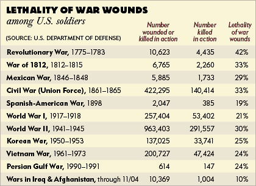

world war1 and 2
world war1 & world war2
A table of the information about world war1 & 2 
word war1 & world war2
world War 1 began on July 28, 1914 and lasted until November 11, 1918. two main sides is the allies are France, Great Britain, Russia, Austria-Hungary. There was a total of 30 countries involved in the conflict. World war 2 was in September 1, 1939 – September 2, 1945. In the world war 2 27,000 people were killed each day between September 1, 1939, until the formal surrender of Japan on September 2, 1945. The primary combatants were the axis nations of Nazi Germany, Fascist Italy, Imperial Japan, and the Allied nations, Great Britain (and its Commonwealth nations), the Soviet Union, and the United States. Seven days after the suicide of Adolf Hitler, Germany unconditionally surrendered on May 7, 1945.
href="http://primaryfacts.com/1645/world-war-1-facts-and-information/"> href="http://www.historynet.com/world-war-ii"> External Link *What was World War 2? *World War I information